Ground theories, compared.
Primo against Z3, cvc5, Yices and OpenSMT across all five supported ground divisions. Explore the qualified full corpora or the latest hybrid integer selections.
Existing SLURM measurements, with exact input hashes matched across solvers. Native dates are 9 or 12 November 2026; reference runs are archived from 24 October. This page redraws the evidence without running solvers.
Full-corpus archive: one fixed Primo profile per logic, chosen by most full-corpus solves, then lowest PAR2. QF_LIA uses the optional integer profile; the other divisions use defaults. This is an archived comparison, not a rerun of current HEAD.
All inputs are included. Higher curves mean more solved within the time budget.
Solved inputs
Solved inputs
Solved inputs
Solved inputs
QF_UF
7,503 inputsFull corpus · native measured 9 Nov 2026 · Primo 7dd8874c (implementation cab1ebc4). Default profile.
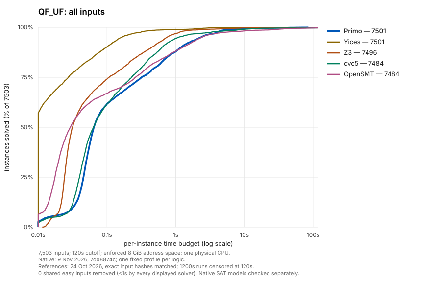

Results, resource outcomes and profile arguments
All numbers below use the displayed input cohort. PAR2 mean is seconds per input; unsolved costs 240 seconds.
| Solver | Solved | PAR2 mean (s) | SAT | UNSAT | Timeout | Unknown | Memory out | Unsupported | Other error |
|---|---|---|---|---|---|---|---|---|---|
| Yices | 7,501 / 7,503 | 0.141 | 3,142 | 4,359 | 2 | 0 | 0 | 0 | 0 |
| Primo | 7,501 / 7,503 | 0.649 | 3,142 | 4,359 | 2 | 0 | 0 | 0 | 0 |
| Z3 | 7,496 / 7,503 | 0.489 | 3,142 | 4,354 | 7 | 0 | 0 | 0 | 0 |
| cvc5 | 7,484 / 7,503 | 1.051 | 3,142 | 4,342 | 19 | 0 | 0 | 0 | 0 |
| OpenSMT | 7,484 / 7,503 | 1.485 | 3,142 | 4,342 | 19 | 0 | 0 | 0 | 0 |
Primo arguments: ["--quiet"]
QF_UF
1,090 inputsFull corpus · native measured 9 Nov 2026 · Primo 7dd8874c (implementation cab1ebc4). Default profile.
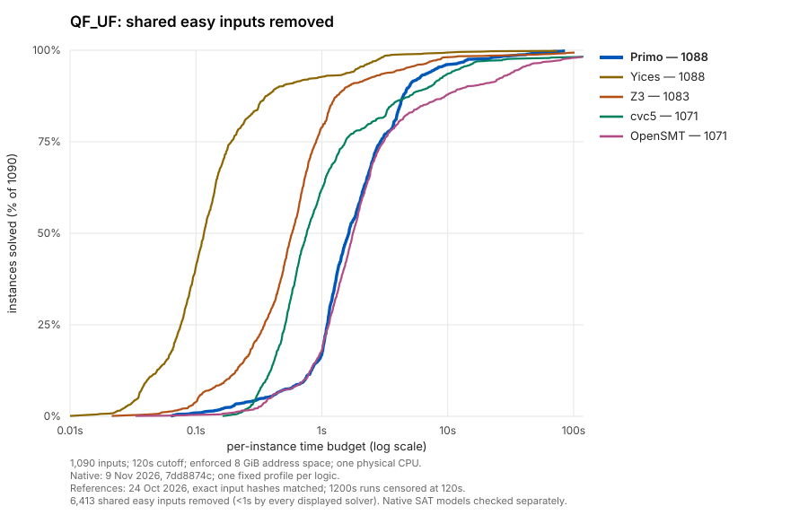

Results, resource outcomes and profile arguments
All numbers below use the displayed input cohort. PAR2 mean is seconds per input; unsolved costs 240 seconds.
| Solver | Solved | PAR2 mean (s) | SAT | UNSAT | Timeout | Unknown | Memory out | Unsupported | Other error |
|---|---|---|---|---|---|---|---|---|---|
| Yices | 1,088 / 1,090 | 0.878 | 180 | 908 | 2 | 0 | 0 | 0 | 0 |
| Primo | 1,088 / 1,090 | 3.650 | 180 | 908 | 2 | 0 | 0 | 0 | 0 |
| Z3 | 1,083 / 1,090 | 3.022 | 180 | 903 | 7 | 0 | 0 | 0 | 0 |
| cvc5 | 1,071 / 1,090 | 6.605 | 180 | 891 | 19 | 0 | 0 | 0 | 0 |
| OpenSMT | 1,071 / 1,090 | 9.650 | 180 | 891 | 19 | 0 | 0 | 0 | 0 |
Primo arguments: ["--quiet"]
QF_LRA
1,753 inputsFull corpus · native measured 9 Nov 2026 · Primo 7dd8874c (implementation cab1ebc4). Default profile.
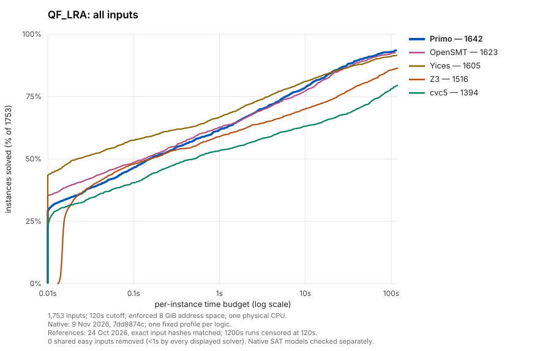

Results, resource outcomes and profile arguments
All numbers below use the displayed input cohort. PAR2 mean is seconds per input; unsolved costs 240 seconds.
| Solver | Solved | PAR2 mean (s) | SAT | UNSAT | Timeout | Unknown | Memory out | Unsupported | Other error |
|---|---|---|---|---|---|---|---|---|---|
| Primo | 1,642 / 1,753 | 21.130 | 983 | 659 | 111 | 0 | 0 | 0 | 0 |
| OpenSMT | 1,623 / 1,753 | 23.487 | 948 | 675 | 130 | 0 | 0 | 0 | 0 |
| Yices | 1,605 / 1,753 | 24.871 | 978 | 627 | 148 | 0 | 0 | 0 | 0 |
| Z3 | 1,516 / 1,753 | 40.316 | 927 | 589 | 237 | 0 | 0 | 0 | 0 |
| cvc5 | 1,394 / 1,753 | 58.247 | 837 | 557 | 359 | 0 | 0 | 0 | 0 |
Primo arguments: ["--quiet"]
QF_LRA
827 inputsFull corpus · native measured 9 Nov 2026 · Primo 7dd8874c (implementation cab1ebc4). Default profile.
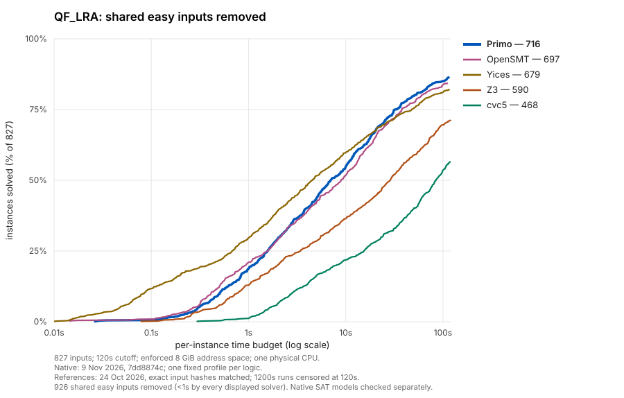

Results, resource outcomes and profile arguments
All numbers below use the displayed input cohort. PAR2 mean is seconds per input; unsolved costs 240 seconds.
| Solver | Solved | PAR2 mean (s) | SAT | UNSAT | Timeout | Unknown | Memory out | Unsupported | Other error |
|---|---|---|---|---|---|---|---|---|---|
| Primo | 716 / 827 | 44.742 | 441 | 275 | 111 | 0 | 0 | 0 | 0 |
| OpenSMT | 697 / 827 | 49.753 | 406 | 291 | 130 | 0 | 0 | 0 | 0 |
| Yices | 679 / 827 | 52.708 | 436 | 243 | 148 | 0 | 0 | 0 | 0 |
| Z3 | 590 / 827 | 85.408 | 385 | 205 | 237 | 0 | 0 | 0 | 0 |
| cvc5 | 468 / 827 | 123.363 | 295 | 173 | 359 | 0 | 0 | 0 | 0 |
Primo arguments: ["--quiet"]
QF_LIA
13,306 inputsFull corpus · native measured 9 Nov 2026 · Primo 7dd8874c (implementation cab1ebc4). Fixed integer profile.
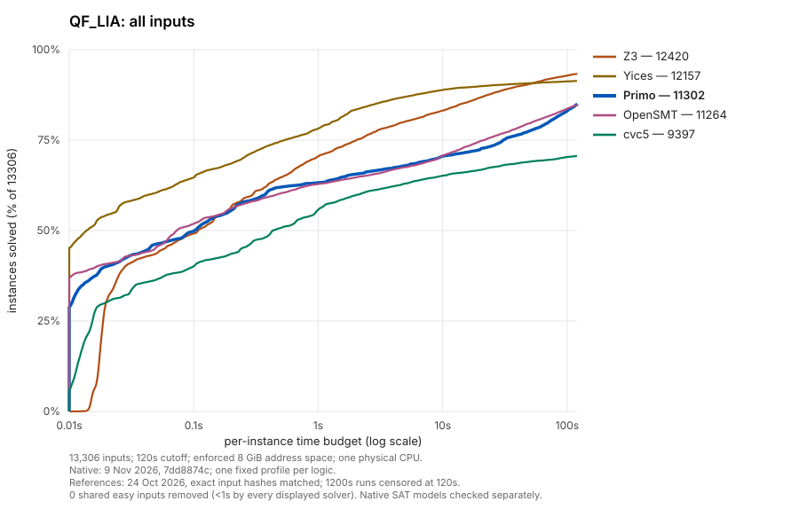

Results, resource outcomes and profile arguments
All numbers below use the displayed input cohort. PAR2 mean is seconds per input; unsolved costs 240 seconds.
| Solver | Solved | PAR2 mean (s) | SAT | UNSAT | Timeout | Unknown | Memory out | Unsupported | Other error |
|---|---|---|---|---|---|---|---|---|---|
| Z3 | 12,420 / 13,306 | 20.392 | 7,977 | 4,443 | 886 | 0 | 0 | 0 | 0 |
| Yices | 12,157 / 13,306 | 22.031 | 7,643 | 4,514 | 1,149 | 0 | 0 | 0 | 0 |
| Primo | 11,302 / 13,306 | 44.594 | 7,656 | 3,646 | 1,288 | 328 | 388 | 0 | 0 |
| OpenSMT | 11,264 / 13,306 | 43.451 | 7,070 | 4,194 | 2,021 | 0 | 0 | 0 | 21 |
| cvc5 | 9,397 / 13,306 | 73.131 | 6,620 | 2,777 | 3,848 | 0 | 27 | 0 | 34 |
Primo arguments: ["--quiet", "--lia-round-integer-bounds", "--lia-primitive-int-rows", "--no-lia-integer-slacks", "--lia-patch-integral-moves", "--lia-cube=uniform"]
QF_LIA
6,377 inputsFull corpus · native measured 9 Nov 2026 · Primo 7dd8874c (implementation cab1ebc4). Fixed integer profile.
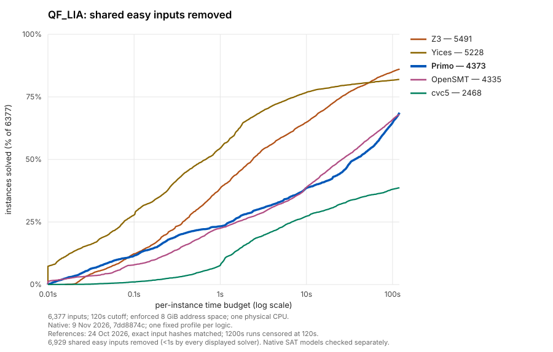

Results, resource outcomes and profile arguments
All numbers below use the displayed input cohort. PAR2 mean is seconds per input; unsolved costs 240 seconds.
| Solver | Solved | PAR2 mean (s) | SAT | UNSAT | Timeout | Unknown | Memory out | Unsupported | Other error |
|---|---|---|---|---|---|---|---|---|---|
| Z3 | 5,491 / 6,377 | 42.478 | 3,205 | 2,286 | 886 | 0 | 0 | 0 | 0 |
| Yices | 5,228 / 6,377 | 45.957 | 2,871 | 2,357 | 1,149 | 0 | 0 | 0 | 0 |
| Primo | 4,373 / 6,377 | 92.994 | 2,884 | 1,489 | 1,288 | 328 | 388 | 0 | 0 |
| OpenSMT | 4,335 / 6,377 | 90.632 | 2,298 | 2,037 | 2,021 | 0 | 0 | 0 | 21 |
| cvc5 | 2,468 / 6,377 | 152.472 | 1,848 | 620 | 3,848 | 0 | 27 | 0 | 34 |
Primo arguments: ["--quiet", "--lia-round-integer-bounds", "--lia-primitive-int-rows", "--no-lia-integer-slacks", "--lia-patch-integral-moves", "--lia-cube=uniform"]
QF_UFLRA
1,284 inputsFull corpus · native measured 9 Nov 2026 · Primo 7dd8874c (implementation cab1ebc4). Default profile.
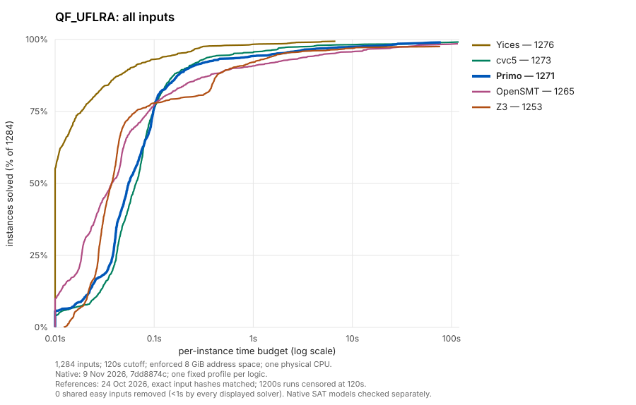

Results, resource outcomes and profile arguments
All numbers below use the displayed input cohort. PAR2 mean is seconds per input; unsolved costs 240 seconds.
| Solver | Solved | PAR2 mean (s) | SAT | UNSAT | Timeout | Unknown | Memory out | Unsupported | Other error |
|---|---|---|---|---|---|---|---|---|---|
| Yices | 1,276 / 1,284 | 1.556 | 765 | 511 | 8 | 0 | 0 | 0 | 0 |
| cvc5 | 1,273 / 1,284 | 2.794 | 762 | 511 | 10 | 0 | 1 | 0 | 0 |
| Primo | 1,271 / 1,284 | 3.092 | 760 | 511 | 7 | 0 | 6 | 0 | 0 |
| OpenSMT | 1,265 / 1,284 | 4.748 | 754 | 511 | 18 | 0 | 0 | 0 | 1 |
| Z3 | 1,253 / 1,284 | 6.189 | 752 | 501 | 31 | 0 | 0 | 0 | 0 |
Primo arguments: ["--quiet"]
QF_UFLRA
159 inputsFull corpus · native measured 9 Nov 2026 · Primo 7dd8874c (implementation cab1ebc4). Default profile.
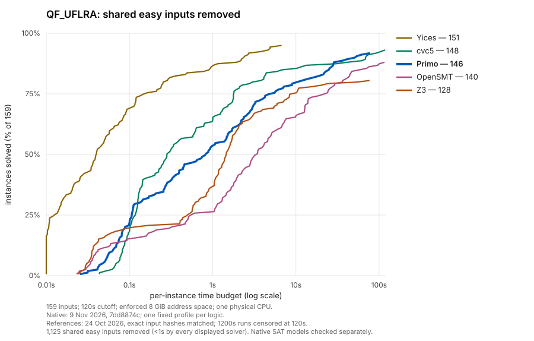

Results, resource outcomes and profile arguments
All numbers below use the displayed input cohort. PAR2 mean is seconds per input; unsolved costs 240 seconds.
| Solver | Solved | PAR2 mean (s) | SAT | UNSAT | Timeout | Unknown | Memory out | Unsupported | Other error |
|---|---|---|---|---|---|---|---|---|---|
| Yices | 151 / 159 | 12.425 | 120 | 31 | 8 | 0 | 0 | 0 | 0 |
| cvc5 | 148 / 159 | 22.066 | 117 | 31 | 10 | 0 | 1 | 0 | 0 |
| Primo | 146 / 159 | 24.500 | 115 | 31 | 7 | 0 | 6 | 0 | 0 |
| OpenSMT | 140 / 159 | 37.881 | 109 | 31 | 18 | 0 | 0 | 0 | 1 |
| Z3 | 128 / 159 | 49.383 | 107 | 21 | 31 | 0 | 0 | 0 | 0 |
Primo arguments: ["--quiet"]
QF_UFLIA
659 inputsFull corpus · native measured 9 Nov 2026 · Primo 7dd8874c (implementation cab1ebc4). Default profile.
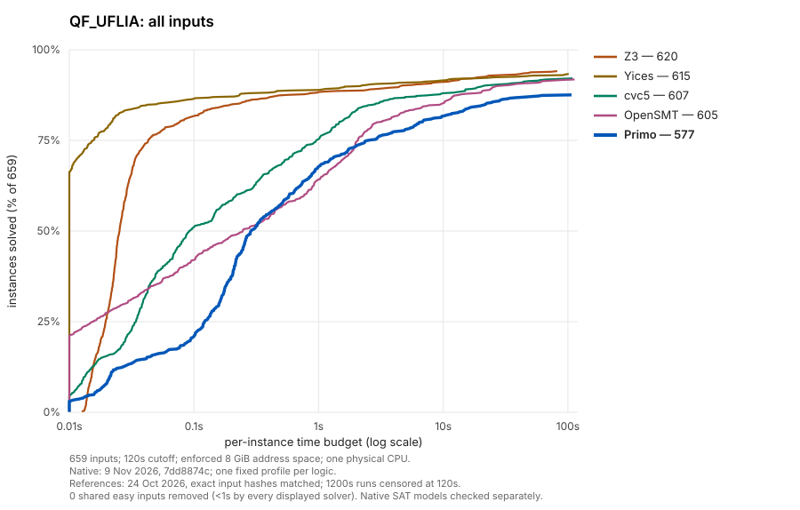

Results, resource outcomes and profile arguments
All numbers below use the displayed input cohort. PAR2 mean is seconds per input; unsolved costs 240 seconds.
| Solver | Solved | PAR2 mean (s) | SAT | UNSAT | Timeout | Unknown | Memory out | Unsupported | Other error |
|---|---|---|---|---|---|---|---|---|---|
| Z3 | 620 / 659 | 15.285 | 430 | 190 | 39 | 0 | 0 | 0 | 0 |
| Yices | 615 / 659 | 16.929 | 422 | 193 | 44 | 0 | 0 | 0 | 0 |
| cvc5 | 607 / 659 | 20.745 | 421 | 186 | 52 | 0 | 0 | 0 | 0 |
| OpenSMT | 605 / 659 | 22.200 | 418 | 187 | 54 | 0 | 0 | 0 | 0 |
| Primo | 577 / 659 | 32.022 | 407 | 170 | 82 | 0 | 0 | 0 | 0 |
Primo arguments: ["--quiet"]
QF_UFLIA
365 inputsFull corpus · native measured 9 Nov 2026 · Primo 7dd8874c (implementation cab1ebc4). Default profile.
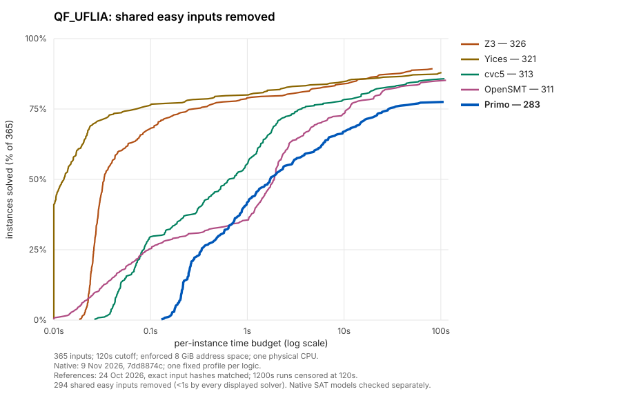

Results, resource outcomes and profile arguments
All numbers below use the displayed input cohort. PAR2 mean is seconds per input; unsolved costs 240 seconds.
| Solver | Solved | PAR2 mean (s) | SAT | UNSAT | Timeout | Unknown | Memory out | Unsupported | Other error |
|---|---|---|---|---|---|---|---|---|---|
| Z3 | 326 / 365 | 27.578 | 273 | 53 | 39 | 0 | 0 | 0 | 0 |
| Yices | 321 / 365 | 30.559 | 265 | 56 | 44 | 0 | 0 | 0 | 0 |
| cvc5 | 313 / 365 | 37.385 | 264 | 49 | 52 | 0 | 0 | 0 | 0 |
| OpenSMT | 311 / 365 | 39.937 | 261 | 50 | 54 | 0 | 0 | 0 | 0 |
| Primo | 283 / 365 | 57.686 | 250 | 33 | 82 | 0 | 0 | 0 | 0 |
Primo arguments: ["--quiet"]
QF_LIA
200 inputsSelected inputs · native measured 12 Nov 2026 · hybrid 9e01197e vs private c49585a0. Hybrid is opt-in; factor 1, unlimited generated atoms.
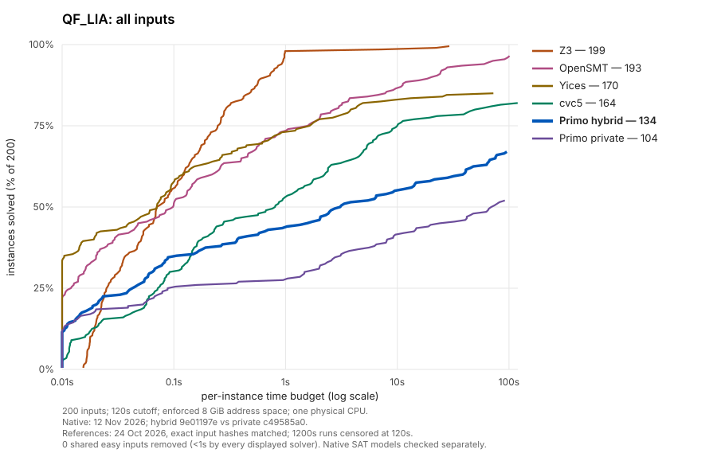

Results, resource outcomes and profile arguments
All numbers below use the displayed input cohort. PAR2 mean is seconds per input; unsolved costs 240 seconds.
| Solver | Solved | PAR2 mean (s) | SAT | UNSAT | Timeout | Unknown | Memory out | Unsupported | Other error |
|---|---|---|---|---|---|---|---|---|---|
| Z3 | 199 / 200 | 1.676 | 102 | 97 | 1 | 0 | 0 | 0 | 0 |
| OpenSMT | 193 / 200 | 12.849 | 99 | 94 | 7 | 0 | 0 | 0 | 0 |
| Yices | 170 / 200 | 37.102 | 84 | 86 | 30 | 0 | 0 | 0 | 0 |
| cvc5 | 164 / 200 | 47.184 | 90 | 74 | 36 | 0 | 0 | 0 | 0 |
| Primo hybrid | 134 / 200 | 85.187 | 83 | 51 | 65 | 0 | 1 | 0 | 0 |
| Primo private | 104 / 200 | 120.577 | 55 | 49 | 31 | 63 | 2 | 0 | 0 |
Primo arguments: {"hybrid": ["--quiet", "--stats", "--lia-branching=hybrid"], "private": ["--quiet", "--stats"]}
QF_LIA
149 inputsSelected inputs · native measured 12 Nov 2026 · hybrid 9e01197e vs private c49585a0. Hybrid is opt-in; factor 1, unlimited generated atoms.
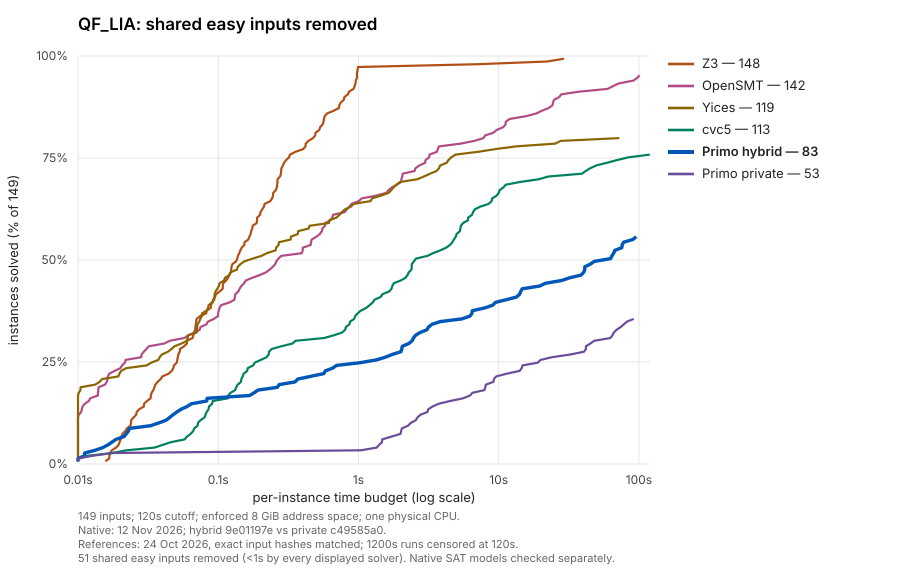

Results, resource outcomes and profile arguments
All numbers below use the displayed input cohort. PAR2 mean is seconds per input; unsolved costs 240 seconds.
| Solver | Solved | PAR2 mean (s) | SAT | UNSAT | Timeout | Unknown | Memory out | Unsupported | Other error |
|---|---|---|---|---|---|---|---|---|---|
| Z3 | 148 / 149 | 2.239 | 74 | 74 | 1 | 0 | 0 | 0 | 0 |
| OpenSMT | 142 / 149 | 17.238 | 71 | 71 | 7 | 0 | 0 | 0 | 0 |
| Yices | 119 / 149 | 49.799 | 56 | 63 | 30 | 0 | 0 | 0 | 0 |
| cvc5 | 113 / 149 | 63.303 | 62 | 51 | 36 | 0 | 0 | 0 | 0 |
| Primo hybrid | 83 / 149 | 114.323 | 55 | 28 | 65 | 0 | 1 | 0 | 0 |
| Primo private | 53 / 149 | 161.827 | 27 | 26 | 31 | 63 | 2 | 0 | 0 |
Primo arguments: {"hybrid": ["--quiet", "--stats", "--lia-branching=hybrid"], "private": ["--quiet", "--stats"]}
QF_UFLIA
300 inputsSelected inputs · native measured 12 Nov 2026 · hybrid 9e01197e vs private c49585a0. Hybrid is opt-in; factor 1, unlimited generated atoms.
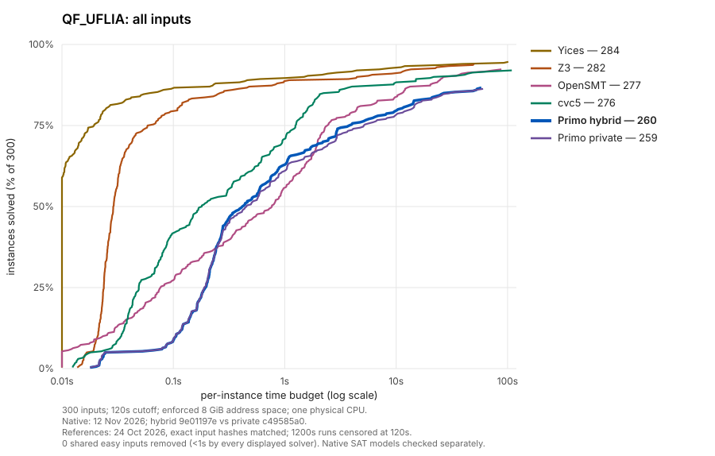

Results, resource outcomes and profile arguments
All numbers below use the displayed input cohort. PAR2 mean is seconds per input; unsolved costs 240 seconds.
| Solver | Solved | PAR2 mean (s) | SAT | UNSAT | Timeout | Unknown | Memory out | Unsupported | Other error |
|---|---|---|---|---|---|---|---|---|---|
| Yices | 284 / 300 | 13.876 | 212 | 72 | 16 | 0 | 0 | 0 | 0 |
| Z3 | 282 / 300 | 15.310 | 213 | 69 | 18 | 0 | 0 | 0 | 0 |
| OpenSMT | 277 / 300 | 21.632 | 207 | 70 | 23 | 0 | 0 | 0 | 0 |
| cvc5 | 276 / 300 | 21.176 | 208 | 68 | 24 | 0 | 0 | 0 | 0 |
| Primo hybrid | 260 / 300 | 34.480 | 204 | 56 | 40 | 0 | 0 | 0 | 0 |
| Primo private | 259 / 300 | 35.385 | 203 | 56 | 41 | 0 | 0 | 0 | 0 |
Primo arguments: {"hybrid": ["--quiet", "--stats", "--lia-branching=hybrid"], "private": ["--quiet", "--stats"]}
QF_UFLIA
208 inputsSelected inputs · native measured 12 Nov 2026 · hybrid 9e01197e vs private c49585a0. Hybrid is opt-in; factor 1, unlimited generated atoms.
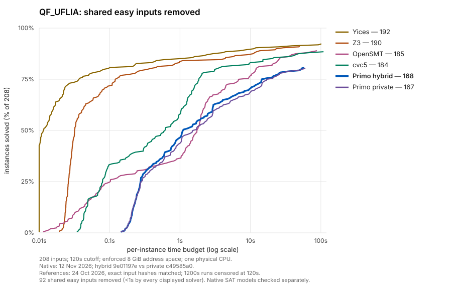

Results, resource outcomes and profile arguments
All numbers below use the displayed input cohort. PAR2 mean is seconds per input; unsolved costs 240 seconds.
| Solver | Solved | PAR2 mean (s) | SAT | UNSAT | Timeout | Unknown | Memory out | Unsupported | Other error |
|---|---|---|---|---|---|---|---|---|---|
| Yices | 192 / 208 | 20.010 | 158 | 34 | 16 | 0 | 0 | 0 | 0 |
| Z3 | 190 / 208 | 22.068 | 159 | 31 | 18 | 0 | 0 | 0 | 0 |
| OpenSMT | 185 / 208 | 31.060 | 153 | 32 | 23 | 0 | 0 | 0 | 0 |
| cvc5 | 184 / 208 | 30.481 | 154 | 30 | 24 | 0 | 0 | 0 | 0 |
| Primo hybrid | 168 / 208 | 49.645 | 150 | 18 | 40 | 0 | 0 | 0 | 0 |
| Primo private | 167 / 208 | 50.952 | 149 | 18 | 41 | 0 | 0 | 0 | 0 |
Primo arguments: {"hybrid": ["--quiet", "--stats", "--lia-branching=hybrid"], "private": ["--quiet", "--stats"]}
Reading the comparison
- The x-axis is the per-instance time budget on a log scale. The y-axis is the percentage of the displayed cohort solved. Higher is better; times below 10 ms share the left edge.
- A solve requires a successful
satorunsatanswer and exit status zero. Unknown, timeout, memory-out, unsupported and error rows remain unsolved. Archived reference errors remain in the totals. - The filtered view removes only inputs every displayed solver solves in under one second. Both the chart and all table metrics are recomputed for that same cohort.
- PAR2 assigns 240 seconds to every unsolved input; the tables show its mean per input. Model validation time is excluded from native timings.
- The latest hybrid comparison has 200 selected QF_LIA and 300 SMT-COMP 2026 QF_UFLIA inputs. It excludes Certora diagnostic repetitions and regression repeats. Hybrid remains opt-in; it has repeated regressions as well as gains. Selections do not determine full-corpus rankings.
- Reference 1200-second runs are censored at 120 seconds. Identical inputs and nominal limits permit comparison, but different dates and builds make this an archived comparison rather than a controlled fresh speedup experiment.
Reference versions: Z3 5.1.0 · cvc5 1.3.4 · Yices 2.7.0 · OpenSMT 2.9.2.